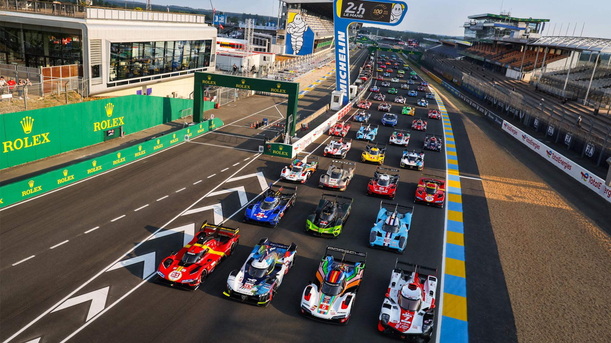

Você deve acompanhar o WEC (World Endurance Championship) porque é muito mais do que apenas uma corrida, é uma verdadeira batalha de resistência, estratégia, tecnologia e trabalho em equipe, tudo ao mesmo tempo, e em pistas históricas ao redor do mundo.
Diferente da Fórmula 1, onde a corrida dura cerca de 1h30, as provas do WEC podem durar 6, 8 ou até 24 horas, com vários pilotos revezando no mesmo carro. Isso cria situações imprevisíveis: chuva à noite, acidentes, quebras, ultrapassagens em momentos decisivos e viradas impressionantes. Nenhuma corrida é igual à outra, e isso mantém a emoção viva do começo ao fim.
Outro motivo é a diversidade de carros e categorias na mesma pista. Você vê os superprotótipos da categoria Hypercar correndo lado a lado com os modelos GT3, todos lutando por posições dentro de suas classes. É como assistir várias corridas ao mesmo tempo em um só evento.
Além disso, o WEC é uma Além disso, o WEC é uma vitrine de inovação tecnológica. Marcas como Ferrari, Toyota, Porsche, BMW e Peugeot testam nas pistas tecnologias híbridas, combustíveis sustentáveis e soluções que, muitas vezes, vão parar nos carros de rua. Desde 2022, por exemplo, toda a competição usa combustível 100% renovável, algo pioneiro entre os grandes campeonatos.. Marcas como Ferrari, Toyota, Porsche, BMW e Peugeot testam nas pistas tecnologias híbridas, combustíveis sustentáveis e soluções que, muitas vezes, vão parar nos carros de rua. Desde 2022, por exemplo, toda a competição usa combustível 100% renovável, algo pioneiro entre os grandes campeonatos.
Se você gosta de histórias épicas, também vai se encantar com as rivalidades históricas, como Ferrari vs Porsche, e com as vitórias emocionantes, como o retorno da Ferrari ao topo com a vitória em Le Mans 2023. É um esporte onde a velocidade é só uma parte do desafio — o que realmente conta é quem consegue chegar até o fim.
E mais: o Brasil está no calendário! As 6 Horas de São Paulo, em Interlagos, acontecem em julho, com entrada para o público, shows, acesso aos boxes e clima de festival. É uma ótima oportunidade de viver o WEC ao vivo.
Em resumo, se você curte automobilismo com emoção real, estratégia de verdade, diversidade de equipes e marcas, e corridas que colocam homem e máquina no limite, o WEC é para você.
